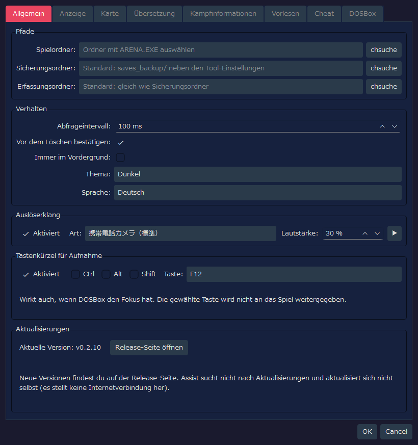
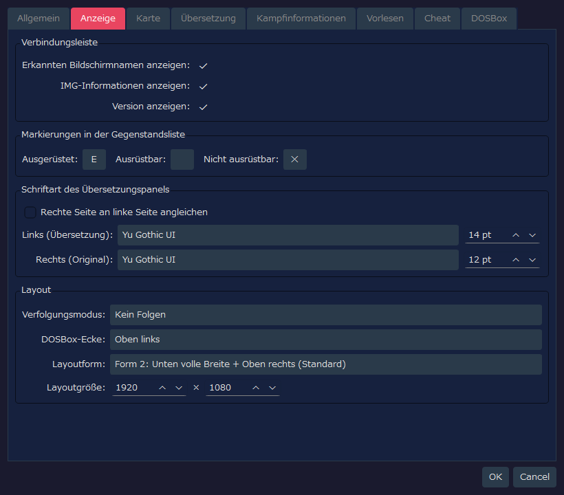
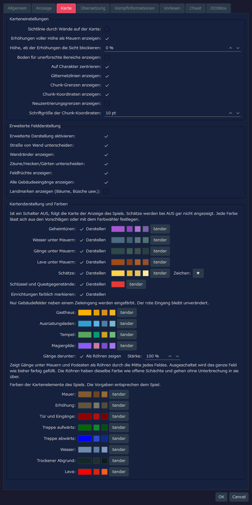
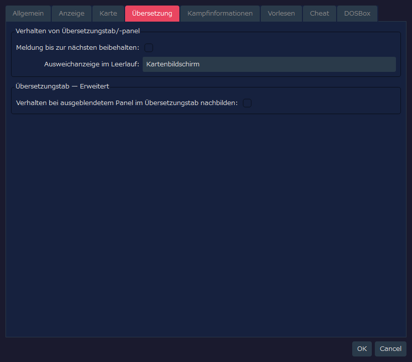
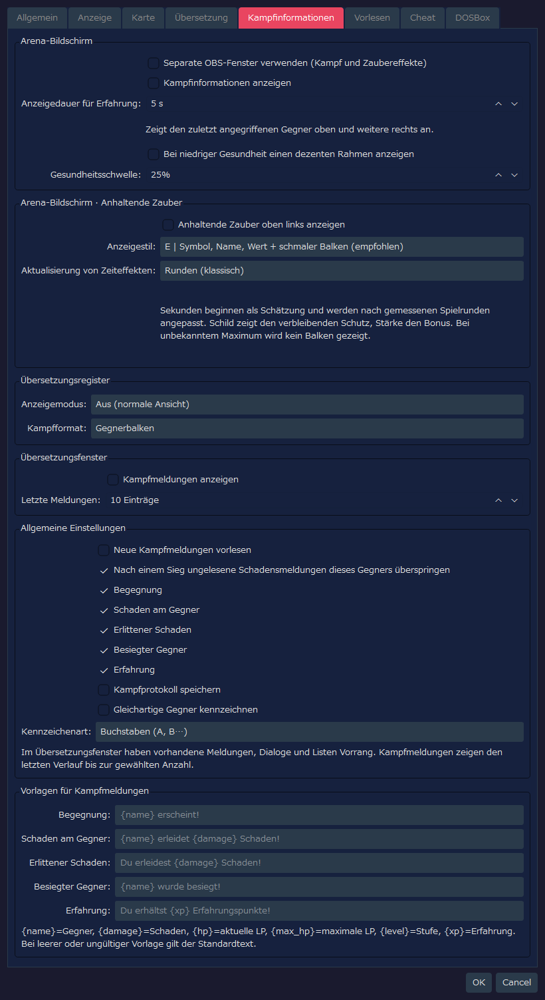
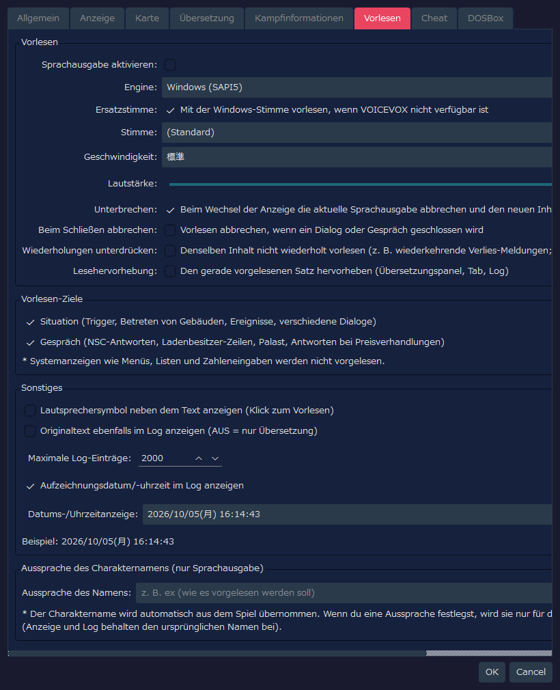
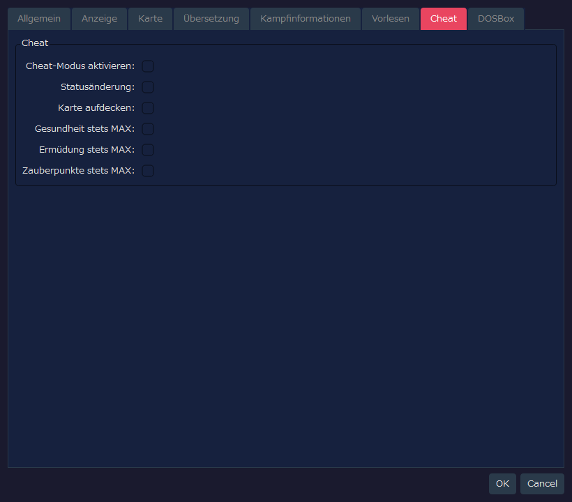
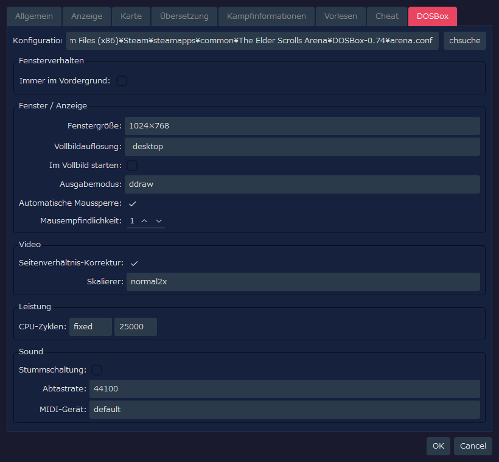

RTESArenaAssist — Einstellungsdialog im Detail
Diese Seite zeigt die Tabs des Einstellungsdialogs von RTESArenaAssist als Screenshots und erklärt jedes Bedienelement.
Die Bilder zeigen den Einstellungsdialog mit den Standardeinstellungen in deiner Anzeigesprache und dem standardmäßigen Thema „Dunkel“.
Die Werte auf dem Tab „DOSBox“ spiegeln nicht nur die Einstellungsdatei von Assist wider, sondern auch das Ergebnis des Lesens der arena.conf am Standardpfad. Weicht die arena.conf in deiner Umgebung ab, ändern sich daher auch die angezeigten Werte.
Inhalt
Tab „Allgemein“
Auf diesem Tab legst du Pfade, das Grundverhalten, den Auslöserklang und das Tastenkürzel für die Aufnahme fest und siehst deine Version.

Pfade
| Beschriftung | Standardwert | Beschreibung |
|---|
Spielordner: | Leer | Der Ordner mit ARENA.EXE und den Spielstanddateien von Arena. Solange er nicht festgelegt ist, sind die Spielstandverwaltung und das Lesen der Spieldaten nicht nutzbar |
Sicherungsordner: | Leer | Zielordner für Spielstandsicherungen. Ist er leer, wird saves_backup/ neben der Einstellungsdatei des Tools verwendet |
Erfassungsordner: | Leer | Speicherort für Screenshots. Ist er leer, wird derselbe Ordner wie für die Sicherungen verwendet |
Durchsuchen... | - | Wählt den jeweiligen Ordner aus |
Verhalten
| Beschriftung | Standardwert | Beschreibung |
|---|
Abfrageintervall: | 100 ms | Zeitabstand, in dem das DOSBox-Fenster und der Speicherzustand überwacht werden. Der Standardwert ist kurz gewählt, damit auch kurze Meldungen erfasst werden |
Vor dem Löschen bestätigen: | AN | Zeigt beim Löschen von Aufnahmen oder Sicherungen einen Bestätigungsdialog an |
Immer im Vordergrund: | AUS | Zeigt das Hauptfenster von Assist vor allen anderen Fenstern an |
Thema: | Dunkel | Wählt das Farbschema der Oberfläche |
Sprache: | Automatisch (System) | Sprache der Oberfläche. Ist nichts festgelegt, wird sie anhand der Systemsprache automatisch bestimmt; eine Änderung wird nach einem Neustart der Anwendung wirksam |
Auslöserklang
| Beschriftung | Standardwert | Beschreibung |
|---|
Aktiviert | AN | Spielt beim Speichern eines Screenshots einen Klang ab |
Art: | 携帯電話カメラ（標準） (Handykamera, Standard) | Der abgespielte Auslöserklang. Zur Auswahl stehen Standard, Kurzfassung, Doppelt, Betonte Höhen und Mild (die Namen in der Liste erscheinen auf Japanisch) |
Lautstärke: | 30 % | Wiedergabelautstärke des Auslöserklangs |
▶ | - | Spielt den ausgewählten Auslöserklang zur Probe ab |
Tastenkürzel für Aufnahme
Während das Spielfenster (DOSBox) den Fokus hat, genügt ein Tastendruck, um eine Aufnahme zu speichern. Nutze das, um Meldungen festzuhalten, die nach wenigen Sekunden verschwinden.
| Element | Standardwert | Beschreibung |
|---|
Aktiviert | AN | Verwendet das Tastenkürzel für die Aufnahme |
Ctrl / Alt / Shift | AUS | Aktiviere sie, wenn du Modifikatortasten kombinieren möchtest |
Taste: | F12 | Die verwendete Taste. Zur Auswahl stehen F5 bis F12, PrintScreen, Pause, ScrollLock, Insert, Home, End, PageUp und PageDown |
- Die gedrückte Taste wird nicht an das Spiel weitergegeben. Tasten, die das Spiel oder DOSBox verwenden (F1 / F3 / F4 / F8, Ctrl+F5 bis F12, Alt+F12, Alt+Pause), lassen sich nicht auswählen
- Verwendet eine andere Anwendung dieselbe Taste als Tastenkürzel, funktioniert deren Tastenkürzel nicht, solange diese Anwendung läuft. Mit einer anderen Taste lassen sich beide nutzen
- Konnte die Taste nicht registriert werden, erscheint eine Meldung in der Statusleiste. Auch dann kannst du über die Kamera-Schaltfläche in der Werkzeugleiste aufnehmen
Aktualisierungen
| Beschriftung | Standardwert | Beschreibung |
|---|
Aktuelle Version: | - | Die Version von Assist, die du verwendest |
Release-Seite öffnen | - | Öffnet die Release-Seite von Assist (die Liste der Releases) im Browser. Ob es eine neue Version gibt, prüfst du dort |
Assist stellt keine Internetverbindung her und sucht daher nicht nach Aktualisierungen und aktualisiert sich nicht selbst.
Tab „Anzeige“
Auf diesem Tab stellst du die Verbindungsleiste, die Markierungen in der Gegenstandsliste, die Schriftart des Übersetzungspanels und das Layout ein.

Verbindungsleiste
| Beschriftung | Standardwert | Beschreibung |
|---|
Erkannten Bildschirmnamen anzeigen: | AN | Zeigt in der Verbindungsleiste den Namen des aktuell erkannten Bildschirms an |
IMG-Informationen anzeigen: | AN | Zeigt in der Verbindungsleiste die gerade erkannten IMG-Informationen an |
Version anzeigen: | AN | Zeigt die Version der Anwendung in der Verbindungsleiste und der Statusleiste an |
Markierungen in der Gegenstandsliste
| Beschriftung | Standardwert | Beschreibung |
|---|
Ausgerüstet: | E | Ein Zeichen, das links neben ausgerüsteten Gegenständen angezeigt wird |
Ausrüstbar: | Leer | Markierung für ausrüstbare Gegenstände. Der Standardwert ist leer, daher wird nichts angezeigt |
Nicht ausrüstbar: | ✕ | Ein Zeichen, das links neben Gegenständen angezeigt wird, die nicht ausgerüstet werden können |
Schriftart des Übersetzungspanels
| Beschriftung | Standardwert | Beschreibung |
|---|
Rechte Seite an linke Seite angleichen | AUS | Bei AN haben Schriftart und Größe der Originalseite dieselben Werte wie die der Übersetzungsseite |
Links (Übersetzung): | App-Standard / 14 pt | Schriftart und Größe des Übersetzungstextes. Ist kein Schriftname gespeichert, wird die Standardschriftart der Anwendung in deiner Umgebung gewählt |
Rechts (Original): | App-Standard / 12 pt | Schriftart und Größe des englischen Originaltextes. Da die Synchronisierung AUS ist, kannst du sie getrennt von der Übersetzungsseite einstellen |
Layout
| Beschriftung | Standardwert | Beschreibung |
|---|
Verfolgungsmodus: | Kein Folgen | Legt fest, ob das andere Fenster folgt, wenn DOSBox oder Assist verschoben wird |
DOSBox-Ecke: | Oben links | Die Bezugsecke auf dem Bildschirm, in der DOSBox bei der einmaligen Anordnung und im Layoutmodus platziert wird |
Layoutform: | Form 2: Unten volle Breite + Oben rechts (Standard) | Aufteilung des Bereichs zwischen DOSBox und den Assist-Panels. Form 2 ist das Standardlayout, das oben rechts und die volle Breite unten verwendet |
Layoutgröße: | 1920 x 1080 | Größe der gesamten Arbeitsfläche im Layoutmodus |
Tab „Karte“
Auf diesem Tab stellst du die Erkundungskarte und die erweiterte Felddarstellung ein.

Karteneinstellungen
| Beschriftung | Standardwert | Beschreibung |
|---|
Sichtlinie durch Wände auf der Karte: | AUS | Bei AUS werden unbestätigte Bereiche hinter einer Wand nicht auf der Karte erfasst. Bei AN entspricht es eher dem Original von Arena, und auch Bereiche hinter Wänden werden erfasst |
Erhöhungen voller Höhe als Mauern anzeigen: | AN | Zeigt Erhöhungen, die vom Boden bis zur Decke reichen, in der Farbe von Wänden an. Es ändert sich nur die Art der Darstellung, nicht, wie Sichtlinien blockiert werden. Erhöhungen, die nicht die volle Höhe haben, werden weiterhin als Erhöhung angezeigt |
Höhe, ab der Erhöhungen die Sicht blockieren: | 0 % | Bei einer Deckenhöhe von 100 % blockieren Erhöhungen, deren Oberkante mindestens diese Höhe hat, die Sichtlinie auf der Karte. Bei 0 % blockieren alle Erhöhungen die Sicht |
Boden für unerforschte Bereiche anzeigen: | AUS | Bei AUS wird nur für bekannte Felder die Bodenfarbe angezeigt, sodass die Form des unerforschten Bereichs verborgen bleibt. Bei AN wird die ganze Karte in der Farbe des Schriftrollenhintergrunds angezeigt |
Auf Charakter zentrieren: | AN | Lässt die Karte dem Charakter automatisch folgen, sodass er in der Mitte bleibt, wenn er sich bewegt. Im Stillstand kannst du die Karte von Hand verschieben |
Gitternetzlinien anzeigen: | AN | Zeigt die Gitternetzlinien an den Feldgrenzen an |
Chunk-Grenzen anzeigen: | AN | Hebt auf der Feldkarte die Chunk-Grenzen im Abstand von 64 Feldern hervor |
Chunk-Koordinaten anzeigen: | AN | Zeigt auf der Feldkarte die Koordinaten jedes Chunks an und erleichtert so die Orientierung |
Neuzentrierungsgrenzen anzeigen: | AUS | Zeigt die Neuzentrierungsgrenzen der Feldkarte als gestrichelte Linien an. Eine Hilfsanzeige zur Positionsuntersuchung und -prüfung |
Schriftgröße der Chunk-Koordinaten: | 10 pt | Schriftgröße der Beschriftungen der Chunk-Koordinaten |
Erweiterte Felddarstellung
| Beschriftung | Standardwert | Beschreibung |
|---|
Erweiterte Darstellung aktivieren: | AN | Der übergeordnete Schalter für die erweiterte Darstellung der Feldkarte. Bei AUS ähnelt die Anzeige der automatischen Karte im Spiel |
Straße von Wand unterscheiden: | AN | Zeichnet passierbare Straßen und nicht passierbare Teile wie Gebäude und Wände in verschiedenen Farben |
Wandränder anzeigen: | AN | Zeigt Wandkonturen und Randgelände (edge) an |
Zäune/Hecken/Gärten unterscheiden: | AN | Unterscheidet Randgelände (edge) wie Zäune, Hecken und Gärten durch Verbindungslinien |
Feldfrüchte anzeigen: | AN | Zeigt Feldfrüchte wie Mais und Äcker in eigenen Farben oder mit Symbolen an |
Alle Gebäudeeingänge anzeigen: | AN | Zeigt auch die Eingänge von Häusern, Gasthäusern, Tempeln, Stadttoren und so weiter rot an. Eingänge von Krypten, Türmen und Verliesen werden unabhängig von dieser Einstellung rot angezeigt |
Landmarken anzeigen (Bäume, Büsche usw.): | AUS | Legt vereinfachte Markierungen für Bäume, Büsche, Felsen, Gräber, Ruinen und mehr darüber. Da es viele sind und die Karte dadurch schwerer lesbar wird, ist der Standardwert AUS |
Kartendarstellung und Farben
Die Karte des Spiels zeichnet unter anderem Gänge unter Mauern, ohne sie zu unterscheiden. Hier legst du fest, ob sie unterschieden gezeichnet werden, und die Farbe jedes Elements. Schaltest du „Darstellen“ in einer Zeile aus, kehrt dieses Element zur Anzeige der Karte des Spiels zurück (nur bei den Schätzen wird bei AUS gar nichts angezeigt).
| Beschriftung | Standardwert | Beschreibung |
|---|
Geheimtüren: | AN | Zeigt entdeckte Geheimtüren in einer eigenen Farbe an. Bis zur Entdeckung bleiben sie eine Wand |
Wasser unter Mauern: | AN | Zeigt Wasser, das unter einer Mauer hindurchführt, in einer eigenen Farbe an. Es wird erst angezeigt, wenn du es tatsächlich durchquert und so aufgedeckt hast |
Gänge unter Mauern: | AN | Zeigt Gänge an, die unter einer Mauer hindurchführen. Sie werden erst angezeigt, wenn du sie tatsächlich durchquert und so aufgedeckt hast |
Lava unter Mauern: | AN | Zeigt Lava, die unter einer Mauer hindurchführt, in einer eigenen Farbe an. Sie wird erst angezeigt, wenn du sie tatsächlich durchquert und so aufgedeckt hast |
Schätze: | AN | Legt eine Markierung auf Orte, an denen du einen Schatz erhalten hast. Das Zeichen der Markierung kannst du im Feld rechts ändern. Ist auf dem Tab „Cheat“ „Karte aufdecken“ aktiviert, werden alle Orte mit Schätzen angezeigt, unabhängig davon, ob du sie erhalten hast |
Schlüssel und Questgegenstände: | AN | Zeigt unter den Schätzen die Markierungen von Schlüsseln und Questgegenständen in einer anderen Farbe an. Bei AUS erscheinen sie in derselben Farbe wie Schätze. Sind die Schätze AUS, werden sie nicht angezeigt |
Einrichtungen farblich markieren: | AN | Ersetzt auf der Stadtkarte Felder in Gebäudefarbe, die an den Eingang eines Gasthauses, Ausrüstungsladens, Tempels oder einer Magiergilde grenzen, durch die Farbe der jeweiligen Einrichtung. Die Farbe der roten Eingänge ändert sich nicht. Die Farbe jeder Einrichtung kannst du in den Feldern darunter ändern |
Gänge darunter: | Als Röhren zeigen / Stärke 100 % | Zeigt Gänge, die unter Mauern und Erhöhungen hindurchführen, als Röhren durch die Mitte des Feldes. Bei AUS wird wie bisher das ganze Feld farbig gefüllt. Die Röhren haben dieselbe Farbe wie Löcher und gehen ohne Unterbrechung in sie über. Eine geringere Stärke macht die Röhren dezenter |
Mit einem Klick auf das Farbfeld rechts neben jedem Eintrag wählst du eine beliebige Farbe. Die kleinen Schaltflächen daneben bieten leicht auswählbare Vorschläge, und Standard stellt die ursprüngliche Farbe wieder her. Auf dieselbe Weise änderst du auch die Farben der ursprünglichen Elemente des Spiels: Mauer, Erhöhung, Tür und Eingänge, Treppe (aufwärts und abwärts), Wasser, trockener Abgrund und Lava (standardmäßig dieselben Farben wie im Spiel).
Tab „Übersetzung“
Auf diesem Tab stellst du die Zusatzanzeigen des Übersetzungspanels und des Übersetzungstabs ein.

Verhalten von Übersetzungstab/-panel
| Beschriftung | Standardwert | Beschreibung |
|---|
Meldung bis zur nächsten beibehalten: | AUS | Legt fest, ob Meldungen zu Triggern und Objektinteraktionen im Übersetzungspanel stehen bleiben, bis die nächste Meldung eintrifft |
Ausweichanzeige im Leerlauf: | Kartenbildschirm | Wählt, was auf der gesamten Fläche des Übersetzungstabs angezeigt wird, wenn du erkundest und es keinen Übersetzungstext gibt. Standardmäßig hat der Kartenbildschirm Vorrang |
Übersetzungstab — Erweitert
| Beschriftung | Standardwert | Beschreibung |
|---|
Verhalten bei ausgeblendetem Panel im Übersetzungstab nachbilden: | AUS | Bei AN werden Übersetzungsergebnisse und Dialogmeldungen im Übersetzungstab angezeigt, genau wie bei ausgeblendetem Übersetzungspanel. Eine erweiterte Einstellung zur Überprüfung |
Hier legst du getrennt fest, wo Kämpfe und anhaltende Zauber angezeigt werden. Die neuen Funktionen für Anzeige, Vorlesen und Speichern sind standardmäßig AUS. In einer früheren Entwicklungsversion gespeicherte Einstellungswerte werden unverändert übernommen. Die Anzeigetexte gibt es auf Japanisch, Englisch, Spanisch, Deutsch, Französisch, Italienisch und Russisch.

Arena-Bildschirm
| Element | Standardwert | Beschreibung |
|---|
Separate OBS-Fenster verwenden (Kampf und Zaubereffekte) | AUS | Fasst Kampfinformationen und anhaltende Zauber in einem Fenster zusammen, das du in der Fensteraufnahme von OBS auswählen kannst |
Kampfinformationen anzeigen | AUS | Zeigt den zuletzt angegriffenen Gegner, den du gerade siehst und dem du begegnet bist, oben auf dem Bildschirm an, weitere lebende Gegner, denen du begegnet bist, auch außerhalb der Sichtweite rechts. Du kannst Gesundheit, Erschöpfung und Zauberpunkte sowie zugefügten Schaden und Siege prüfen. Erlittener Schaden wird am unteren Rand des Erkundungsbereichs angezeigt |
Anzeigedauer für Erfahrung | 5 s | Zeigt Erfahrung unten rechts an, sobald du sie erhältst, und blendet jedes Feld nach der angegebenen Anzahl Sekunden aus. Erhältst du kurz hintereinander weitere, werden ältere Felder nach links verschoben (1 bis 60 Sekunden) |
Bei niedriger Gesundheit einen dezenten Rahmen anzeigen | AUS | Lässt den Rand des Erkundungsbildschirms leicht pulsieren, wenn die Gesundheit auf den angegebenen Anteil oder darunter fällt. Du kannst dies auch aktivieren, ohne die Gegneranzeige der Kampfinformationen zu nutzen |
Gesundheitsschwelle | 25% | Der Anteil, ab dem die Randanzeige bei niedriger Gesundheit beginnt (1 bis 99 % der maximalen Gesundheit) |
Die Anzeige des erlittenen Schadens verschwindet nach etwa 5 Sekunden automatisch. Die Sicht der Gegner wird an jedem Ort gleich beurteilt. Steht die Karte oder die Koordinate nicht fest, werden Gegner nicht auf Verdacht angezeigt.
Zur Aufnahme mit OBS aktivierst du diese Einstellung, wählst in der „Fensteraufnahme“ RTESArenaAssist オーバーレイ (der Fenstertitel wird in allen Sprachen auf Japanisch angezeigt) aus, erlaubst Transparenz und legst es über das Spielbild. Kampfinformationen und anhaltende Zauber erscheinen in derselben Quelle.
Arena-Bildschirm · Anhaltende Zauber
| Element | Standardwert | Beschreibung |
|---|
Anhaltende Zauber oben links anzeigen | AUS | Zeigt den Zustand von Licht, Schild, Stärke, Feuerresistenz und Schweben an |
Anzeigestil | E | Zur Auswahl stehen A „Name + Restwert“, B „Name + waagerechter Balken“, C „Symbol + waagerechter Balken“, D „Symbol + Abdunkelung im Uhrzeigersinn“, E „Symbol + Name + Restwert + schmaler Balken“ und F „Kompakte Kachel“ |
Aktualisierung von Zeiteffekten | Runden | Legt fest, ob Licht, Feuerresistenz und Schweben in Runden oder in geschätzten Sekunden (jede Sekunde) aktualisiert werden. Die Sekunden werden anhand des Spielfortschritts angepasst; ändert sich die Fortschrittsgeschwindigkeit, etwa durch DETAIL, ist daher nicht unbedingt ein fester Faktor im Spiel |
Schild zeigt den verbleibenden Schutz, Stärke den Bonus. Bei einer Verbindung, die erst später zustande kam und bei der das Maximum nicht bekannt ist, kann der Balken entfallen. Die Sekundenanzeige ist eine Schätzung; das Ende eines Effekts richtet sich nach dem Zustand im Spiel.
| Element | Standardwert | Beschreibung |
|---|
Anzeigemodus | Aus (normale Ansicht) | Zur Auswahl stehen: normale Anzeige beibehalten / normale Anzeige und Kampfinformationen gemeinsam / Kampfinformationen im Vollbild |
Kampfformat | Gegnerbalken | Legt fest, ob die Kampfinformationen als Text oder als Gegnerbalken gezeigt werden |
| Element | Standardwert | Beschreibung |
|---|
Kampfmeldungen anzeigen | AUS | Zeigt Kampftexte im Übersetzungspanel an. Erscheinen bisherige Meldungen, Gespräche oder Listen, haben diese Vorrang |
Letzte Meldungen | 10 Einträge | Zeigt die letzten 1 bis 50 Kampftexte an. Wird die Anzahl überschritten, fallen die ältesten Texte weg und neue kommen hinzu |
Allgemeine Einstellungen
| Element | Standardwert | Beschreibung |
|---|
Neue Kampfmeldungen vorlesen | AUS | Ist das Vorlesen insgesamt aktiviert, werden neue Kampftexte in der Reihenfolge ihres Auftretens gelesen. Gleiche Texte kurz hintereinander werden nicht ausgeschlossen, und beim nächsten Schaden wird das vorherige Vorlesen nicht abgebrochen |
Nach einem Sieg ungelesene Schadensmeldungen dieses Gegners überspringen | AN | Beendet beim Sieg die laufende und die noch ungelesene Wiedergabe von zugefügtem und erlittenem Schaden dieses Gegners. Das Vorlesen anderer Gegner wird fortgesetzt |
Kampfprotokoll speichern | AUS | Speichert den Kampfverlauf getrennt vom normalen Log. Der Umschalter im Tab „Log“ erscheint nur, wenn Aufzeichnungen vorliegen |
Gleichartige Gegner kennzeichnen | AUS | Hängt nur dann ein Unterscheidungszeichen an den Namen, wenn es mehrere Gegner mit demselben Namen gibt |
Kennzeichenart | Buchstaben (A, B…) | Zur Auswahl stehen A, B… oder 1, 2… |
Vorlagen für Kampfmeldungen | Standardtexte der jeweiligen Sprache | Hier bearbeitest du die Texte für Begegnung, Schaden am Gegner, Schaden an dir selbst, besiegten Gegner und Erfahrung. Leere Felder oder nicht verwendbare Platzhalter werden auf den Standardtext zurückgesetzt |
Tab „Vorlesen“
Auf diesem Tab stellst du das Vorlesen von Übersetzungstexten, die Ziele des Vorlesens, die Anzeige im Log und die Aussprache von Charakternamen ein.

Vorlesen
| Beschriftung | Standardwert | Beschreibung |
|---|
Sprachausgabe aktivieren: | AUS | Aktiviert die Funktion zum Vorlesen von Übersetzungstexten insgesamt |
Engine: | Windows (SAPI5) | Wählt die Engine für das Vorlesen. VOICEVOX ist auswählbar, wenn die lokale VOICEVOX-Engine läuft |
Ersatzstimme: | AN | Ist VOICEVOX gewählt, aber nicht verfügbar, werden Sätze, die nicht gelesen werden konnten, mit der Windows-Stimme vorgelesen. Bei AUS wird nichts vorgelesen |
Stimme: | (Standard) | Wird angezeigt, wenn die Engine Windows (SAPI5) ist. Die verwendete SAPI-Stimme. Bei (Standard) wird die Standardstimme des Betriebssystems verwendet |
Charakter: | Charakter mit Stil-ID 0 | Wird angezeigt, wenn die Engine VOICEVOX ist. Der VOICEVOX-Charakter, der zum Vorlesen verwendet wird |
Stil: | Stil-ID 0 | Wird angezeigt, wenn die Engine VOICEVOX ist. Der Stimmstil des gewählten Charakters |
🔊 Test | - | Wird angezeigt, wenn die Engine VOICEVOX ist. Liest einen kurzen Satz mit dem gewählten Charakter und Stil zur Probe vor |
Geschwindigkeit: | 標準 (Standard) | Vorlesegeschwindigkeit |
Lautstärke: | 100 | Lautstärke des Vorlesens. Einstellbar im Bereich von 0 bis 100 |
Unterbrechen: | AN | Wechselt die Anzeige, wird das vorherige Vorlesen abgebrochen und der neue Inhalt vorgelesen |
Beim Schließen abbrechen: | AUS | Beendet das laufende Vorlesen, wenn ein Dialog oder ein Gespräch geschlossen wird |
Wiederholungen unterdrücken: | AUS | Liest denselben Inhalt nicht wiederholt vor (etwa wiederkehrende Meldungen in Verliesen). Im Log bleibt er erhalten |
Lesehervorhebung: | AUS | Färbt den Satz ein, der gerade vorgelesen wird (Übersetzungspanel, Übersetzungstab, Log) |
Wird VOICEVOX nicht gefunden, erscheint „Starte VOICEVOX, um es auszuwählen (127.0.0.1:50021).“. Starte VOICEVOX und öffne den Einstellungsdialog erneut, dann kannst du Charakter und Stil auswählen.
Vorlesen-Ziele
| Beschriftung | Standardwert | Beschreibung |
|---|
Situation (Trigger, Betreten von Gebäuden, Ereignisse, verschiedene Dialoge) | AN | Macht Texte, die eine Situation beschreiben, zum Ziel des Vorlesens, etwa Trigger, das Betreten von Gebäuden, Ereignisse und verschiedene Dialoge |
Gespräch (NSC-Antworten, Ladenbesitzer-Zeilen, Palast, Antworten bei Preisverhandlungen) | AN | Macht Gesprächstexte zum Ziel des Vorlesens, etwa Antworten von NSC, Zeilen von Ladenbesitzern, Palast und Antworten bei Preisverhandlungen |
Systemanzeigen wie Menüs, Listen und Zahleneingaben werden nicht vorgelesen.
Sonstiges / Log
| Beschriftung | Standardwert | Beschreibung |
|---|
Lautsprechersymbol neben dem Text anzeigen (Klick zum Vorlesen) | AUS | Zeigt neben dem angezeigten Text ein Lautsprechersymbol an, mit dem du per Klick vorlesen lässt |
Originaltext ebenfalls im Log anzeigen (AUS = nur Übersetzung) | AUS | Zeigt im Übersetzungslog auch den englischen Originaltext an. Bei AUS wird nur die Übersetzung angezeigt |
Maximale Log-Einträge: | 2000 | Obergrenze für die Anzahl gespeicherter Log-Einträge. Ältere Einträge über dieser Grenze werden automatisch gelöscht |
Aufzeichnungsdatum/-uhrzeit im Log anzeigen | AN | Zeigt bei den Log-Einträgen Datum und Uhrzeit der Aufzeichnung an |
Datums-/Uhrzeitanzeige: | yyyy/MM/dd(aaa) HH:mm:ss | Anzeigeformat für Datum und Uhrzeit im Log. Du kannst eine Voreinstellung oder ein eigenes Format wählen |
Aussprache des Charakternamens
| Beschriftung | Standardwert | Beschreibung |
|---|
Aussprache des Namens: | Leer | Ersetzt den automatisch aus dem Spiel übernommenen Charakternamen nur beim Vorlesen durch die angegebene Aussprache. In der Anzeige und im Log bleibt der ursprüngliche Name erhalten |
Tab „Cheat“
Auf diesem Tab stellst du Hilfsfunktionen ein, die Werte im Spiel überschreiben oder bestimmte Werte dauerhaft auf MAX halten.

| Beschriftung | Standardwert | Beschreibung |
|---|
Cheat-Modus aktivieren: | AUS | Der übergeordnete Schalter für alle Cheat-Funktionen. Wenn nur er AN ist, ändert sich nichts, solange du keine Untereinstellung aktivierst |
Statusänderung: | AUS | Erlaubt Statusänderungen wie das Bearbeiten von Attributen |
Karte aufdecken: | AUS | Zeigt bei aktivierten Cheats die ganze Karte an |
Gesundheit stets MAX: | AUS | Setzt bei aktivierten Cheats die aktuelle Gesundheit auf das Maximum zurück, wenn sie darunter liegt |
Ermüdung stets MAX: | AUS | Setzt bei aktivierten Cheats die aktuelle Erschöpfung auf das Maximum zurück |
Zauberpunkte stets MAX: | AUS | Setzt bei aktivierten Cheats die aktuellen Zauberpunkte auf das Maximum zurück |
Tab „DOSBox“
Auf diesem Tab liest du die arena.conf von DOSBox und stellst Fensteranzeige, Video, Leistung und Ton ein.

Konfigurationsdatei / Fensterverhalten
| Beschriftung | Standardwert | Beschreibung |
|---|
Konfigurationsdatei | arena.conf am Standardpfad | Die Konfigurationsdatei von DOSBox. Ist die Einstellung in Assist leer, wird die Standardanordnung der Steam-Version von Arena als Standardpfad gelesen |
Durchsuchen... | - | Wählt eine beliebige arena.conf aus |
Immer im Vordergrund: | AUS | Zeigt das DOSBox-Fenster vor allen anderen Fenstern an |
Fenster / Anzeige
| Beschriftung | Standardwert | Beschreibung |
|---|
Fenstergröße: | 1024×768 | windowresolution. Wähle eine Voreinstellung; bei „Benutzerdefiniert“ bearbeitest du die Zahlenfelder für B/H |
Vollbildauflösung: | desktop | fullresolution. Legt die Auflösung im Vollbildmodus fest |
Im Vollbild starten: | AUS | fullscreen. Legt fest, ob DOSBox im Vollbild gestartet wird |
Ausgabemodus: | ddraw | output. Die Ausgabemethode für die Darstellung in DOSBox |
Automatische Maussperre: | AN | autolock. Sperrt die Maus automatisch im DOSBox-Fenster |
Mausempfindlichkeit: | 100 | sensitivity. Die Mausempfindlichkeit in DOSBox |
Video
| Beschriftung | Standardwert | Beschreibung |
|---|
Seitenverhältnis-Korrektur: | AN | aspect. Korrigiert das Seitenverhältnis des Bildes |
Skalierer: | normal2x | scaler. Der Filter zur Vergrößerung des DOSBox-Bildes |
Leistung
| Beschriftung | Standardwert | Beschreibung |
|---|
CPU-Zyklen: | fixed 25000 | cycles. Legt die Geschwindigkeit der CPU-Emulation fest. Bei fixed ist das Zahlenfeld rechts aktiv |
Sound
| Beschriftung | Standardwert | Beschreibung |
|---|
Stummschaltung: | AUS | nosound. Deaktiviert den Ton von DOSBox |
Abtastrate: | 44100 | rate. Die Abtastrate des Mixers |
MIDI-Gerät: | default | mididevice. Das Gerät, das für die MIDI-Wiedergabe verwendet wird |